GrowthZone MemberSuite is a web-based platform that helps you move data from one system into another. Think of it as a smart assistant that takes your data files (like spreadsheets or CSV exports), lets you tell it how the columns in your file match up with the columns the destination system expects, and then does the heavy lifting of converting and transferring everything for you.
Instead of manually copying and pasting rows of data or writing complicated formulas, you use MemberSuite's visual tools to draw connections between your data and the format you need. Then you click a button and let the platform do the work.
MemberSuite is built for GrowthZone customers and staff. Whether you are a GrowthZone customer bringing your data into the platform, or a GrowthZone support team member helping customers with their data onboarding, MemberSuite gives you a clean, organized way to manage the process from start to finish.
Before you can use MemberSuite, someone from your organization (or from GrowthZone) will send you an invitation by email. Here is what to do when you receive it:
Look for an email with the subject line containing your organization's name and an invitation to MemberSuite. Check your spam or junk folder if you don't see it in your inbox.
The email contains a special link that is unique to you. Click it to open the MemberSuite sign-up page in your web browser.
On the sign-up page, fill in your first name, last name, and choose a password. Your password must be at least 8 characters long. Use a mix of letters, numbers, and symbols for best security.
Once you submit the form, your account is created. You will see a confirmation message telling you that you can now log in.
Open your web browser and navigate to the MemberSuite URL provided by your organization or GrowthZone representative.
Type in the email address that was used for your invitation, and the password you chose when you accepted the invitation.
If your email and password are correct, you will be taken to your dashboard. If you see an error message, double-check that you typed your email and password correctly. Remember that passwords are case-sensitive.
When you first log in, you will land on your dashboard. This is your home base. From here you can see your recent workspaces, projects, and any recent activity. Think of it as your personal starting page that gives you a quick overview of what is happening.
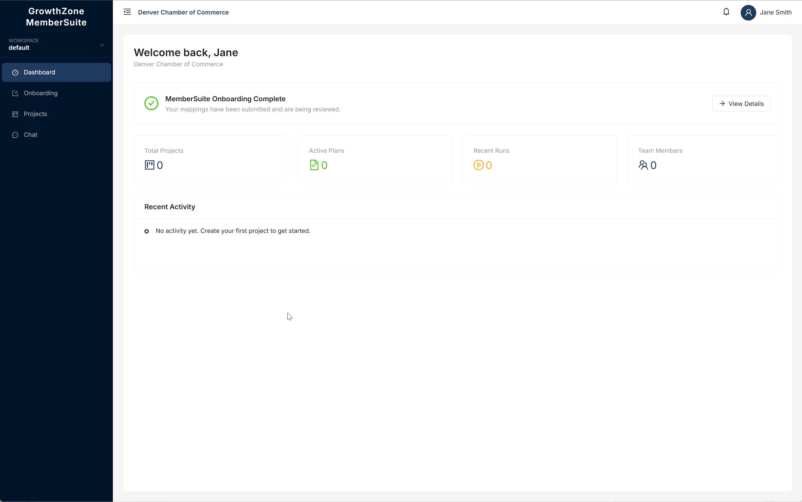
The Dashboard shows a personalized welcome message, onboarding status, quick stats (Total Projects, Active Plans, Recent Runs, Team Members), and your Recent Activity feed.
On the left side of the screen you will see the sidebar menu. This is how you move around the platform. Here is what each item means:
| Menu Item | What It Does |
|---|---|
| Dashboard | Takes you back to your home screen with an overview of your recent activity. |
| Onboarding | A guided wizard that walks you through uploading your data and mapping columns. This is the easiest way to get your data into the system. |
| Workspaces | Shows all the workspaces you have access to. This is where your projects are organized. |
| Projects | Lists all projects within your organization. Each project contains data files and plans. |
| Chat | Chat with your GrowthZone support team and access the AI Assistant for quick help. |
| Activity Log | Shows a history of what has happened — uploads, runs, changes, and more. |
| Team | Manage team members and invitations (visible to Admins only). |
| Settings | Your profile and account settings. |
Every user in MemberSuite has a role that determines what they can see and do. Your role was assigned when you were invited. Here is a simple breakdown of each role:
| Role | What You Can Do | Who Has This Role |
|---|---|---|
| Platform Admin | You manage the entire system. You can see all organizations, all users, create new organizations, and manage everything across the platform. | GrowthZone internal team leads |
| Platform Support | You help customers with their data onboarding. You can see the organizations you are assigned to and assist their users with projects, plans, and data uploads. | GrowthZone support staff |
| Tenant Admin | You manage your own organization. You can invite new users to your team, manage projects, and oversee everything within your organization. | Customer organization managers |
| Tenant User | You work on data projects. You can upload files, create and edit plans, run transformations, and view results within your organization. | Customer team members |
A workspace is like a folder on your computer. It is a way to group related projects together so you can stay organized. For example, you might have a workspace called "2026 Data Migration" that contains all the projects related to that effort.
You can switch between workspaces using the Workspace dropdown at the top of the sidebar. Click the dropdown to see your existing workspaces, create a new one, or edit or delete an existing workspace.
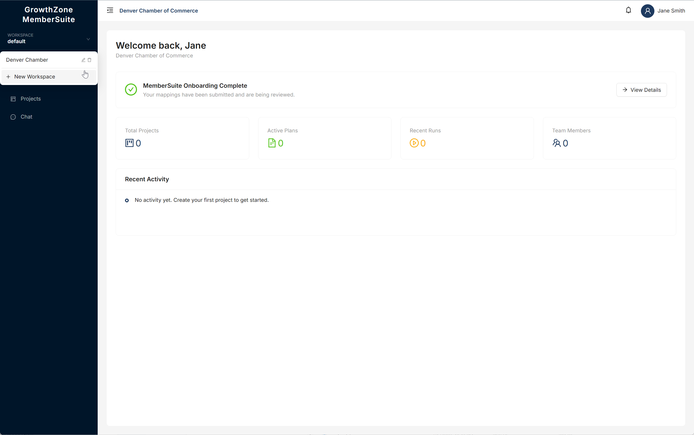
The Workspace dropdown shows your workspaces with edit and delete icons, plus a "+ New Workspace" option.
Click Workspaces in the sidebar menu.
You will see a button labeled New Workspace near the top of the page. Click it.
Give your workspace a clear, descriptive name (up to 200 characters). The description is optional but helpful for your team to understand what this workspace is for (up to 1,000 characters).
Your new workspace is ready. You can now add projects to it.
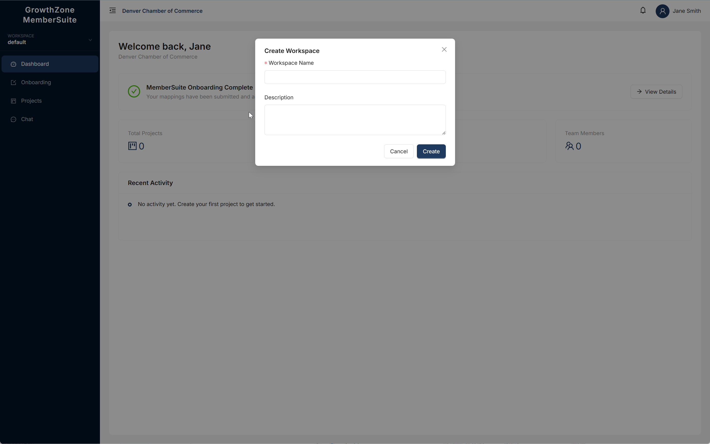
The Create Workspace dialog asks for a Workspace Name (required) and an optional Description.
To edit a workspace, click the pencil icon next to the workspace name in the dropdown. This opens the Edit Workspace dialog where you can change the name or description and click Save.
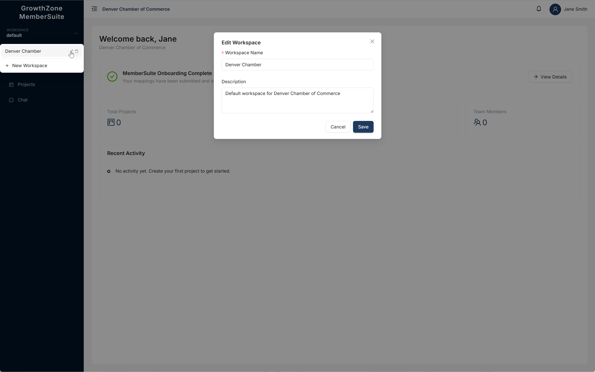
The Edit Workspace dialog lets you update the workspace name and description.
A project lives inside a workspace. It is a container for your data files and the plans that describe how to transform them. Think of it this way:
Navigate to the workspace where you want to create the project, or go to the Projects page from the sidebar.
Click the New Project button.
Give your project a clear name (up to 200 characters). Add an optional description (up to 1,000 characters) to help your team understand its purpose.
Your project is created. You can now upload files and create plans inside it.
By default, a workspace is visible only to the person who created it (the owner). To let other team members see and work in your workspace, you need to share it with them. When you share a workspace, you choose an access level for each person:
| Access Level | What It Means |
|---|---|
| Viewer | Can see the workspace and its projects, but cannot make any changes. |
| Editor | Can see everything and make changes — upload files, create plans, run transformations. |
| Admin | Can do everything an Editor can, plus share the workspace with others and manage access. |
Navigate to the workspace from the Workspaces page.
You will find this near the top of the workspace page.
Choose the person you want to share with from the list of your organization's users. Then select the access level: Viewer, Editor, or Admin.
The team member will now be able to see the workspace the next time they log in or refresh their page.
The Onboarding wizard is the easiest way to get your data into GrowthZone MemberSuite. It walks you through a simple five-step process: Welcome, Upload Data, Map Columns, Review, and Done. You do not need to create workspaces or projects — the wizard handles everything for you.
Click Onboarding in the sidebar menu. You will see the Welcome screen, which explains the three-step process:
Click Get Started to begin.
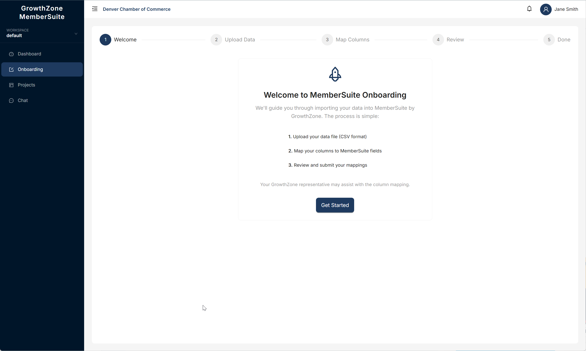
On this screen, you upload the data file you want to import. Drag and drop your file onto the upload area, or click to browse your computer. MemberSuite supports CSV and Excel (.xlsx, .xls) files up to 50 MB.
Once your file is uploaded, you will see a confirmation showing the file name and the number of rows detected. A progress bar across the top tracks your position in the wizard.
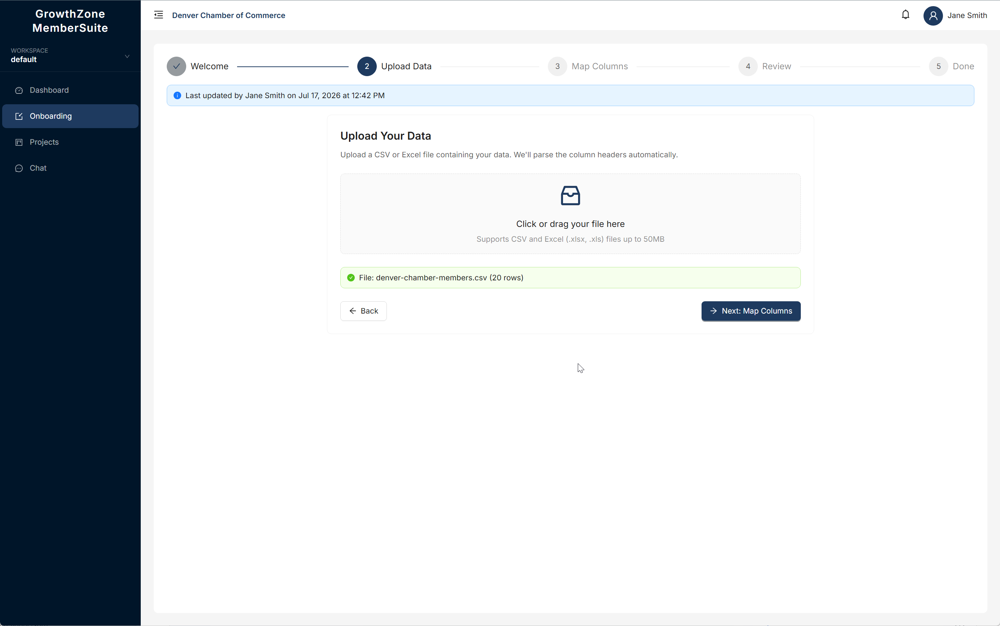
Below the upload area, a Data Preview table shows the first rows of your file so you can verify the data looks correct before proceeding. The columns from your file (FirstName, LastName, Email, Phone, Company, Title, etc.) are displayed exactly as they appear in your file.
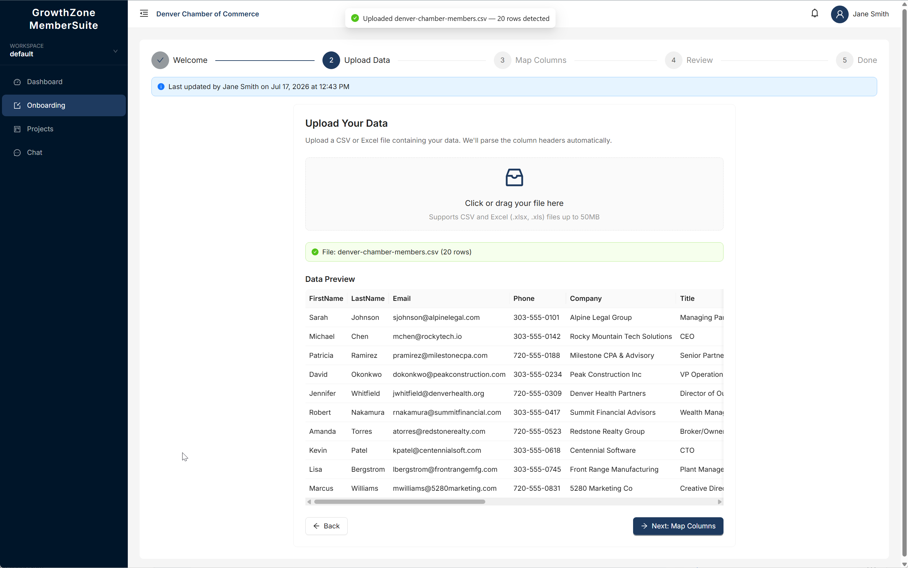
Click Next: Map Columns to proceed to the mapping step.
This is where you tell MemberSuite how the columns in your file correspond to the fields in the system. On the left side, you see the MemberSuite fields (e.g., firstName, lastName, email). On the right, you select which Source Column from your file maps to each field.
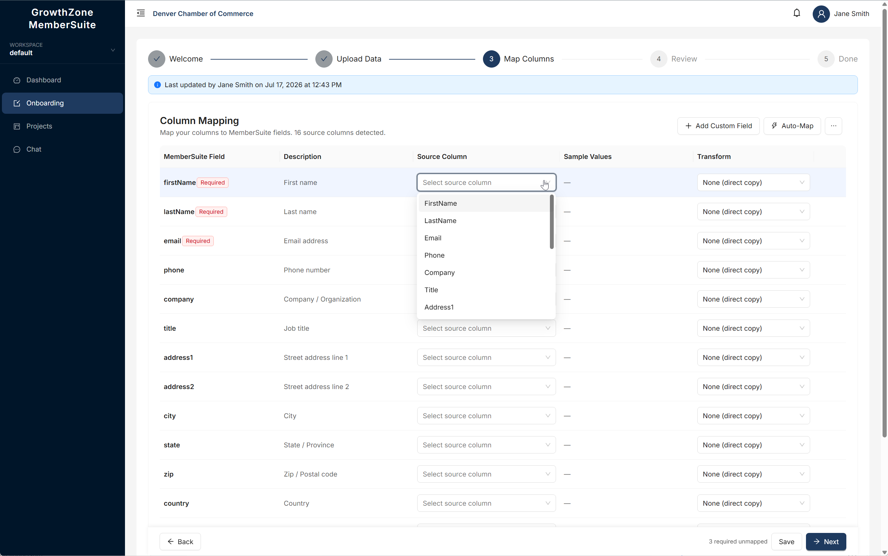
For each MemberSuite field, click the Select source column dropdown and choose the matching column from your file. Fields marked Required (like firstName, lastName, and email) must be mapped before you can proceed.
As you map columns, the Sample Values column shows data from your file so you can verify the mapping is correct. You can also use the Auto-Map button to let MemberSuite automatically match columns that have similar names.
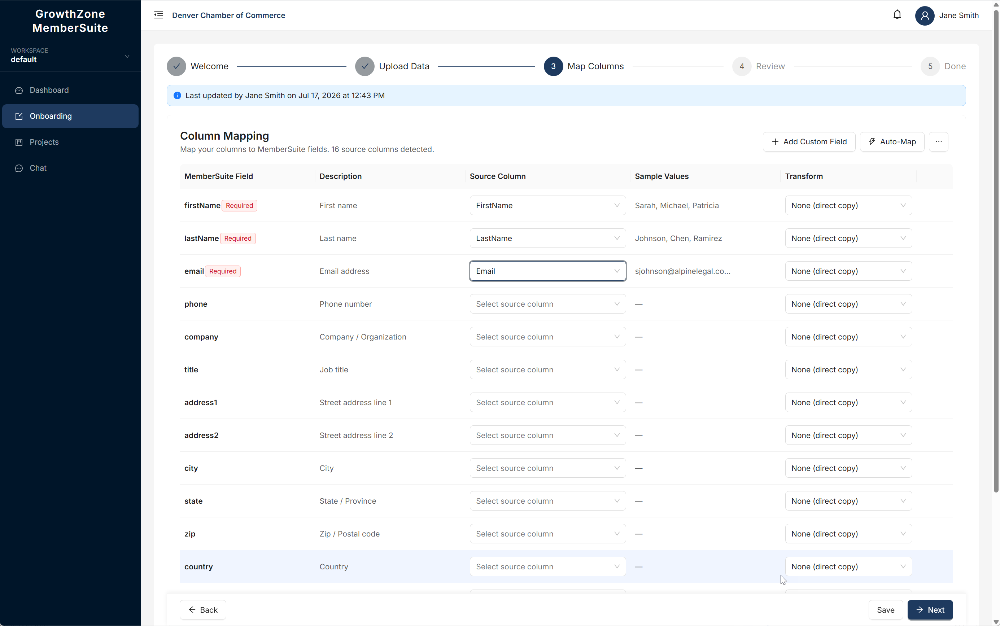
If your data contains columns that do not match any of the standard MemberSuite fields, you can create your own. Click the + Add Custom Field button at the top of the mapping table. A dialog appears where you can define:
Click Add Field to create it. The new field immediately appears in the MemberSuite Field list and you can map a source column to it just like any other field.
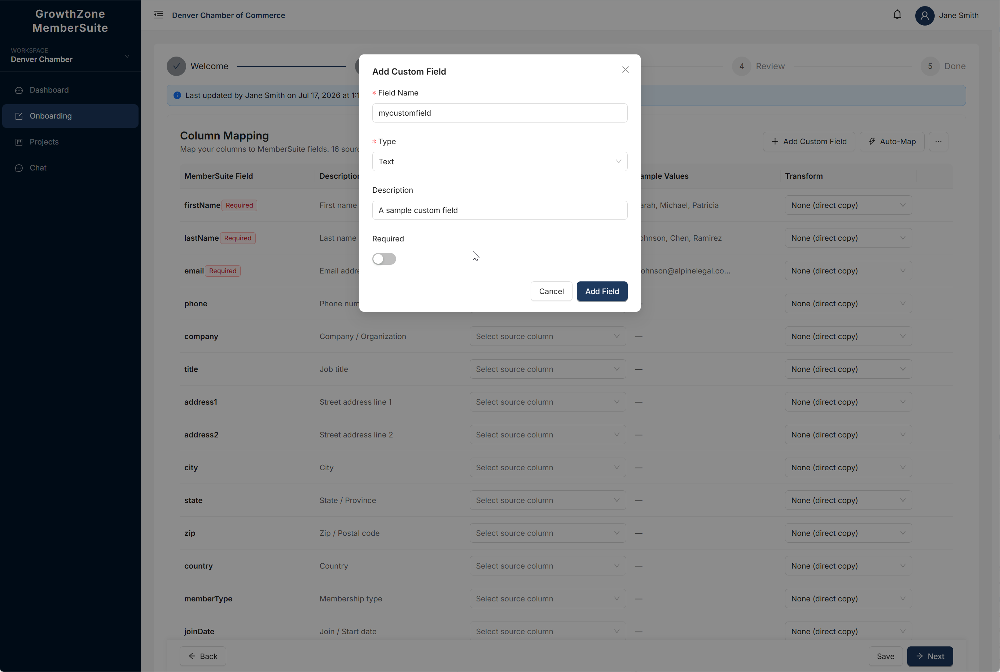
The Add Custom Field dialog lets you define a new field with a name, type, description, and required toggle.
When you are satisfied with your mappings, click Save to save your progress, or click Next to proceed to the Review step.
Before submitting, the Review screen shows a summary of all the column mappings you configured. You will see:
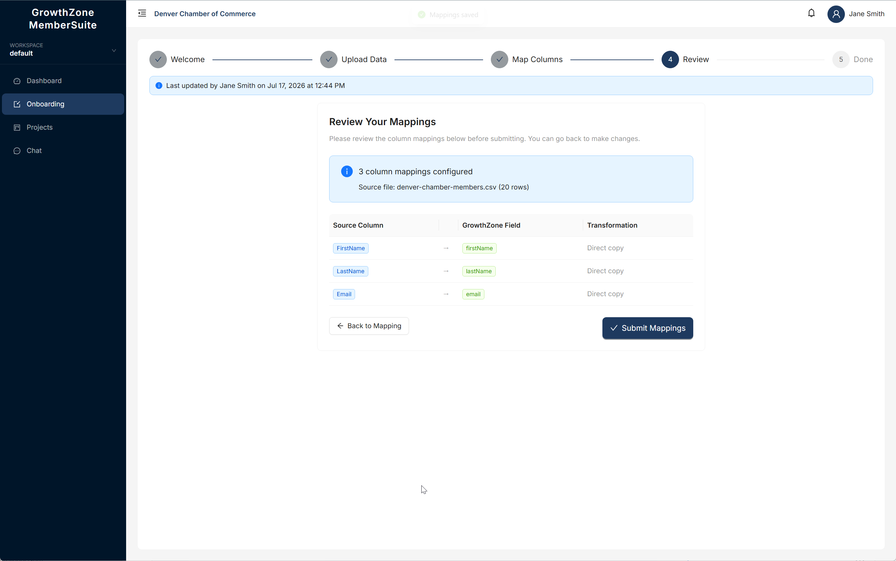
If everything looks correct, click Submit Mappings. If you need to make changes, click Back to Mapping to return to the previous step.
After submitting, you will see a confirmation screen with a green checkmark and the message "Mappings Submitted." Your GrowthZone representative will review and finalize the import.
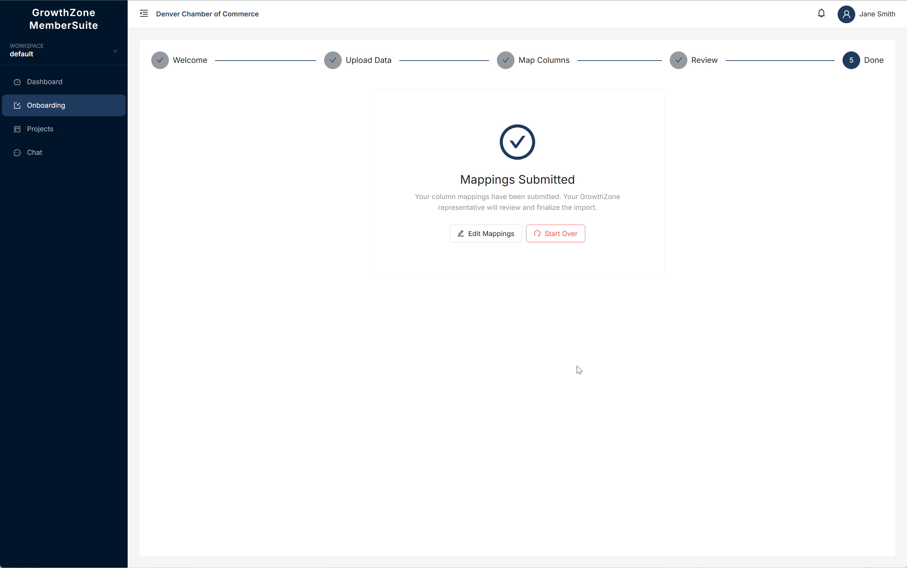
From this screen, you can:
MemberSuite accepts the following types of files:
| File Type | Common Extensions | Description |
|---|---|---|
| CSV | .csv | Comma-separated values — the most common spreadsheet export format. |
| Excel | .xls, .xlsx | Microsoft Excel spreadsheets. |
| JSON | .json | A structured data format often used by web applications. |
| XML | .xml | A structured data format used by many business systems. |
| Plain Text | .txt | Simple text files with data in a consistent format. |
Navigate to the project where you want to upload the file. You can find your project under its workspace or on the Projects page.
Inside the project, look for the tab that shows your uploaded files.
Click the upload button. A file picker window will open.
Browse your computer and select the file you want to upload. Make sure it is one of the supported file types listed above and is under 50 MB.
You will see a progress indicator while your file is being uploaded. Do not close the browser tab or navigate away until the upload is complete.
Once your file is uploaded, MemberSuite stores it securely within your project. The file appears in your project's file list with details like its name, size, type, who uploaded it, and when. You can now use this file as the source data for a plan (see the next section).
A plan is a set of instructions that tells MemberSuite how to transform your data. It is where you define which columns in your source file should go to which fields in the target system, and how the data should be converted along the way.
Think of a plan like a recipe: it describes the ingredients (your source data), the steps (the field mappings and transformations), and the result (the formatted output).
Every plan has a status that tells you where it is in its lifecycle. Here is what each status means:
| Status | What It Means | What You Can Do |
|---|---|---|
| Draft | You are still working on it. The plan is not finalized yet. | Edit field mappings, change settings, update the plan definition. You cannot run a draft plan. |
| Published | It is ready to use. The plan has been finalized and locked. | Run the plan (Dry Run or Full Run). You cannot edit a published plan. If you need to make changes, create a new plan. |
| Archived | It has been retired. The plan is no longer in active use. | View the plan and its past run history. You cannot run or edit an archived plan. |
Navigate to the project where you want to create the plan.
Inside the project, click on the Plans tab to see your list of plans.
Click the button to create a new plan.
Give your plan a clear name (up to 200 characters), such as "Member Import - Phase 1". Add an optional description to explain what this plan does.
Your plan is created in Draft status. You can now open it and start mapping your fields.
The mapping interface is where the real work happens. Here is the basic idea:
For each connection you make, you are telling MemberSuite: "Take the data from this column in my file and put it into that field in the target system."
When you are satisfied with your field mappings and ready to run the plan, you need to publish it. Publishing locks the plan so it cannot be accidentally changed.
Navigate to the plan you want to publish.
Make sure everything looks correct. Once published, you will not be able to edit the plan.
The plan's status changes from Draft to Published. It is now ready to run.
When you run a published plan, you have two options:
| Run Type | What It Does | When to Use It |
|---|---|---|
| Dry Run | Tests your plan without making any real changes. It processes your data and shows you what would happen, but does not actually write anything to the target system. Think of it as a rehearsal. | Always do a Dry Run first. It helps you catch mistakes before they affect real data. |
| Full Run | Actually processes your data for real. It reads your source file, applies your mappings, and writes the results to the target system. This is the real thing. | Use this only after you have reviewed the results of a Dry Run and are confident everything is correct. |
Navigate to the plan you want to run. It must be in Published status.
You will be asked to choose between a Dry Run and a Full Run.
Choose Dry Run to test, or Full Run to process for real. We strongly recommend doing a Dry Run first.
The run is placed in a queue and processed. You will see the status change from Queued to Running to Completed (or Failed if something went wrong). You can leave the page and come back — the run continues in the background.
Every time you run a plan (whether Dry Run or Full Run), MemberSuite keeps a record of it. To view your run history:
Navigate to the relevant project.
Click on the plan you want to review.
You will see a list of all runs for this plan, sorted with the most recent at the top. Each entry shows the run type, status, who started it, and when.
When you click on a specific run, you will see a summary of what happened. Here are the key numbers to look at:
| Metric | What It Means |
|---|---|
| Records Processed | The total number of rows or records from your source file that the plan attempted to process. |
| Succeeded | The number of records that were successfully transformed and (for Full Runs) written to the target system. |
| Failed | The number of records that could not be processed. These need your attention. |
| Status | What It Means |
|---|---|
| Queued | The run is waiting in line to be processed. It has not started yet. |
| Running | The run is currently being processed. Please wait. |
| Completed | The run finished successfully. Check the results to see how many records succeeded or failed. |
| Failed | The run encountered a serious problem and could not finish. See below for what to do. |
It is common for some records to fail, especially on your first run. Do not worry — here is what to do:
The Chat page gives you two ways to get help: direct conversations with your GrowthZone support team and an AI Assistant for quick answers.
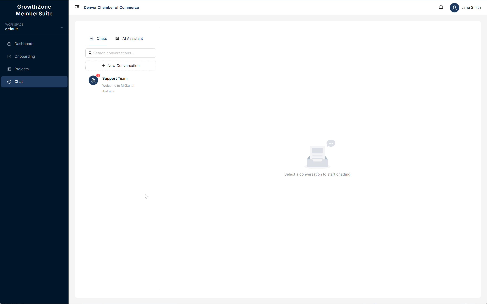
The Chat page shows your conversations on the left and the selected conversation on the right. Switch between Chats and AI Assistant using the tabs at the top.
The Chats tab shows your conversations with the GrowthZone support team. You can:
Click on a conversation in the list to open it. Type your message in the text box at the bottom and press Enter or click Send to reply.
The AI Assistant tab lets you ask questions and get instant answers about using MemberSuite, data formatting, mapping fields, and more. It is available around the clock and can help you troubleshoot common issues without waiting for a support representative.
If you are a Tenant Admin, Platform Admin, or Platform Support user, you can invite new people to join your organization on MemberSuite.
Click Team in the sidebar menu.
You will see a button to invite a new team member.
Type the email address of the person you want to invite.
Select the appropriate role for this person. If you are a Tenant Admin, you can assign either Tenant Admin or Tenant User. See the Understanding Your Role section above for descriptions of each role.
An email is sent to the person with a link to create their account. The invitation is valid for 7 days.
On the Team page, you can see a list of all pending, accepted, and cancelled invitations. From here you can:
| Action | What It Does | When to Use It |
|---|---|---|
| Resend | Sends a fresh invitation email with a new link and resets the 7-day expiration timer. | If the person did not receive the original email, or if the original link expired. |
| Cancel | Cancels the invitation. The link in the email will no longer work. | If you invited the wrong person or no longer need them to join. |
When someone receives your invitation, they get an email that includes your name, your organization's name, and a link to accept the invitation. When they click the link, they are taken to a page where they enter their first name, last name, and choose a password. Once they complete that, they can log in immediately.
A dropdown menu will appear.
This takes you to your account settings page.
Enter your current password, then type your new password twice to confirm it.
Your password is updated. Use the new password the next time you log in.
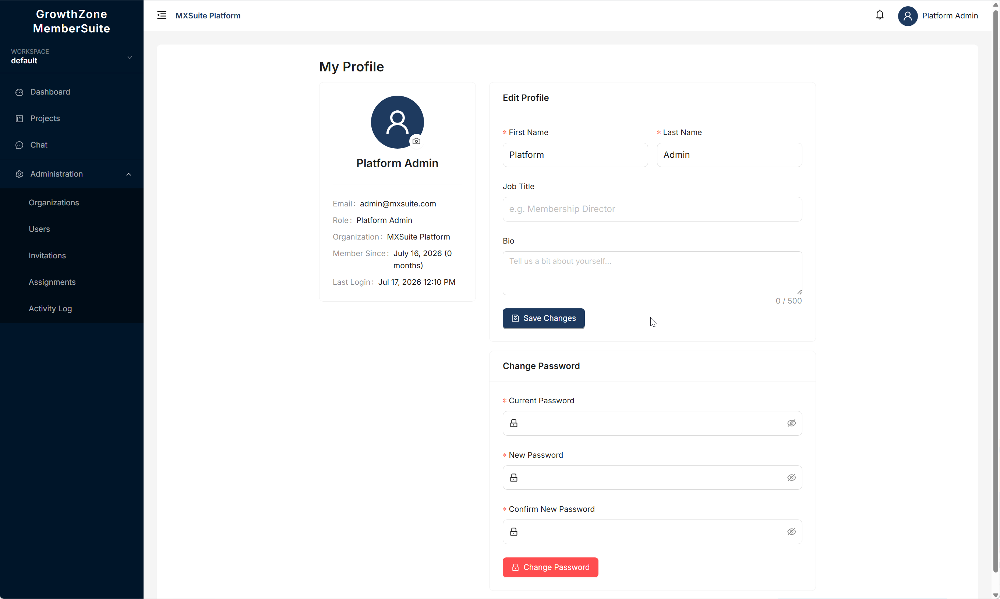
The My Profile page shows your avatar, account details, Edit Profile form (First Name, Last Name, Job Title, Bio), and Change Password section.
If you forget your password, you can reset it without contacting anyone:
Open MemberSuite in your web browser.
You will find this link below the login form.
Type the email address you use to log in to MemberSuite. Click "Send Reset Link."
You will receive an email with a password reset link. Click it to open the reset page. Check your spam or junk folder if you do not see the email within a few minutes.
Type your new password (at least 8 characters) and confirm it. Click "Reset Password."
Go back to the login page and sign in using your email and new password.
On your profile page, you can view and update your personal information:
Click Settings in the sidebar menu to access your application preferences:
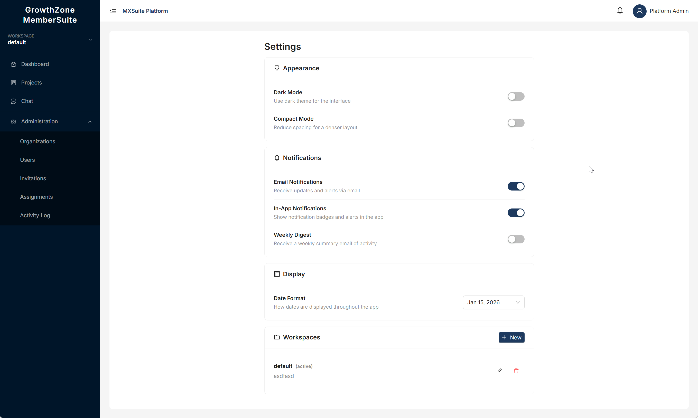
The Settings page with Appearance toggles, Notification preferences, Date Format selector, and Workspace management.
If you are a Platform Admin or Platform Support user, you have access to a full set of administration tools for managing organizations, users, invitations, platform branding, onboarding schemas, activity logs, and more.
These features are covered in detail in the dedicated Platform Administrator Guide, which includes step-by-step instructions and screenshots for every administration task.
If you run into a problem you cannot solve on your own, reach out to your GrowthZone support representative. They have access to your organization's data and can help troubleshoot issues, answer questions, and guide you through any part of the platform.
If something unexpected happened — data that looks wrong, a missing file, or a setting that changed — the Activity Log is the first place to look. It shows who did what and when, so you can quickly understand what happened.
| Question | Answer |
|---|---|
| I did not receive my invitation email. What should I do? | Check your spam or junk folder first. If it is not there, ask the person who invited you to resend the invitation from the Team page. |
| My invitation link says it is expired. What now? | Invitation links are valid for 7 days. Ask the person who invited you to click "Resend" on your invitation. This creates a fresh link with a new 7-day window. |
| I forgot my password. How do I get back in? | Go to the login page and click "Forgot Password?" Enter your email address and follow the instructions in the email you receive. The reset link is valid for 1 hour. |
| My file upload failed. What went wrong? | The most common reasons are: the file is too large (over 50 MB), the file type is not supported, or the file is empty. Check the file and try again. If the problem continues, contact support. |
| I published my plan but found a mistake. Can I undo it? | Published plans cannot be edited. Create a new plan with the corrections, map your fields again, and publish the new plan. You can archive the old plan to keep things tidy. |
| What is the difference between a Dry Run and a Full Run? | A Dry Run is a test — it shows you what would happen without actually changing anything. A Full Run does the real processing. Always do a Dry Run first. |
| Can I delete a project or workspace? | Yes, if you are the owner of the project or have the appropriate permissions. Be careful — deleting a project removes all of its files, plans, and run history. |
| I cannot see a workspace that my colleague shared with me. | Try refreshing your browser. If you still cannot see it, ask your colleague to confirm they shared it with the correct email address and that your access level is set correctly. |
| What happens to my data when an organization is deactivated? | Your data is preserved but not accessible. No one in the organization can log in while it is deactivated. If the organization is reactivated, everything will be available again as before. |
Here are simple definitions for terms you will encounter while using GrowthZone MemberSuite:
| Term | What It Means |
|---|---|
| Tenant | An organization that uses MemberSuite. If you are a GrowthZone customer, your company is a tenant. Each tenant has its own users, workspaces, projects, and data — completely separate from other tenants. |
| Workspace | A folder-like container used to group related projects together. You can share workspaces with team members and control who can view or edit them. |
| Project | A container that holds your uploaded data files, transformation plans, and run history. Projects live inside workspaces. |
| Plan | A set of instructions that tells MemberSuite how to transform your data — specifically, which fields in your source file map to which fields in the target system. Plans go through three stages: Draft, Published, and Archived. |
| Plan Run | A single execution of a plan. Every time you run a plan, a Plan Run record is created that tracks the status and results. |
| Dry Run | A test run that shows you what would happen if you ran your plan for real, without actually making any changes. Use this to verify your plan is correct before doing a Full Run. |
| Full Run | A real run that actually processes your data and writes the results to the target system. Only do this after reviewing the results of a Dry Run. |
| Asset | A file that has been uploaded to a project. This could be a CSV, Excel, JSON, XML, or text file. Also called a "data file" or "uploaded file" in this guide. |
| Role | Your permission level in MemberSuite. There are four roles: Platform Admin, Platform Support, Tenant Admin, and Tenant User. Your role determines what you can see and do. |
| Invitation | An email sent to someone asking them to join MemberSuite. The email contains a special link that lets them create their account. Invitations are valid for 7 days. |
| Field Mapping | The connection between a column in your source file and a field in the target system. For example, mapping your "Email Address" column to the target system's "email" field. |
| Source Field | A column or field in your uploaded data file. This is where the data comes from. |
| Target Field | A field in the destination system. This is where the data will go. |